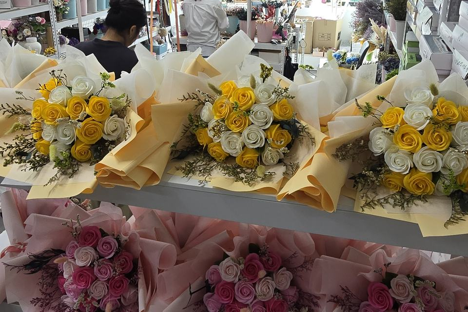
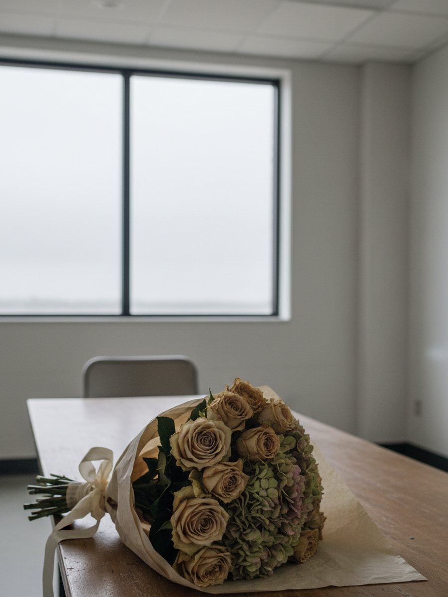

행사를 앞두고 꽃다발을 준비하실 때, 당일 아침에 받으면 되지 않을까 생각하실 수 있습니다. 저희 경험으로는 그게 가장 위험한 타이밍입니다.
당일 아침은 이미 늦은 시점입니다
리허설이 길어지고 대기가 이어지는 사이, 꽃이 먼저 지칩니다. 생화는 하루만 지나도 잎끝이 안쪽으로 말리고 가장자리가 갈변하기 시작하는데, 행사 시작 전 그 몇 시간이 딱 그 구간에 걸립니다. 사진을 찍을 즈음엔 이미 꽃이 처음 상태가 아닌 경우가 많습니다.
여기에 수십 개를 한꺼번에 관리해야 하는 문제가 더해집니다. 개인 선물이라면 한 다발만 신경 쓰면 되지만, 행사는 다릅니다. 포장 상태를 일일이 확인하고, 순서대로 배치하고, 시들지 않았는지 점검하는 일이 담당자 한 사람의 몫이 됩니다.

미리 받아두실 수 있다는 것의 의미
프리저브드와 비누꽃은 시들지 않습니다. 이 사실이 개인 선물에서는 "오래 간직할 수 있다"는 뜻이지만, 단체 행사에서는 조금 다르게 번역됩니다. 당일이 아니라 미리 준비해 둘 수 있다는 뜻입니다.
행사 며칠 전에 받아 검수해 두시면, 당일에는 상태를 걱정할 일이 없습니다. 리허설이 늦어지든, 일정이 조금 바뀌든 꽃은 그대로 기다려 줍니다. 종류를 섞어 수량을 맞추셔도 되고, 행사 성격에 맞춰 색상을 나눠서 준비하셔도 됩니다.
여러 기업의 행사를 함께해 왔습니다
단체 꽃다발 주문이 완료되면 저희 공방 선반에는 시상식용, 워크숍 답례품용, 창립기념일용으로 나뉜 꽃다발이 색깔별로 줄지어 놓입니다. 말보다 이 선반이 먼저, 그동안 함께해온 시간을 보여준다고 생각합니다.
손에 익은 공정이라는 건 단순히 손이 빠르다는 뜻이 아닙니다. 시상식용은 무대 위에서 멀리서도 색이 또렷하게 보여야 하고, 워크숍 답례품은 여러 명이 동시에 받아 드는 만큼 크기가 부담스럽지 않아야 합니다. 창립기념일처럼 오래 두고 볼 상황이면 색이 바래지 않는 구성이 먼저입니다. 같은 "단체 꽃다발"이어도 행사 성격에 따라 챙겨야 할 기준이 다르고, 여러 번 겪어본 쪽이 그 차이를 먼저 짚어드릴 수 있습니다.
행사 담당자분들이 저희에게 가장 자주 확인하시는 건 숫자가 아니라 일정입니다. "이 날짜까지 받을 수 있나요", "포장 상태는 어떻게 오나요" 같은 질문들이고, 저희는 그 질문에 맞춰 답해 드리는 편이 실제 도움이 된다고 생각합니다.
구성을 고르실 때 참고하시면 좋은 것
단체 주문에서 가장 많이 고민하시는 지점은 "전부 같은 걸로 할지, 부서나 대상별로 나눌지"입니다. 정답은 없지만 기준은 있습니다.
- 받으시는 분이 한 그룹이라면 — 같은 구성으로 통일하시는 편이 행사 사진에서도 정돈되어 보입니다.
- 직급이나 부서가 섞여 있다면 — 색상만 다르게, 구성은 동일하게 가시는 절충이 무난합니다. 형평성 문제도 줄어듭니다.
- 실내 조명이 어두운 행사장이라면 — 진한 색보다 밝은 색 계열이 무대 위에서 또렷하게 보입니다.
이런 질문들은 미리 여쭤봐 주시면 저희 쪽에서 행사 성격에 맞춰 제안해 드립니다.
행사 당일엔 상자를 열기만 하면 됩니다
미리 받아 검수까지 마치셨다면, 당일 할 일은 하나입니다. 안전하게 포장된 상자에서 꺼내 건네는 것. 리허설이 늦어져도, 대기가 길어져도 꽃 상태를 다시 걱정하지 않으셔도 됩니다.
행사가 끝난 뒤에도 남습니다
받으신 분들의 책상 위에는 그 뒤로도 꽃이 남습니다. 하루짜리 행사 물품이 아니라, 시간이 지나도 자리를 지키는 것으로 남는다는 뜻입니다. 예산이 그날 하루로 소모되지 않는다는 의미이기도 합니다.
자주 묻는 질문
Q. 행사 며칠 전에 주문해야 하나요?
A. 행사 규모와 수량에 따라 달라질 수 있어 정확한 일정은 상담을 통해 확인해 드립니다. 확정된 날짜가 있으시면 미리 문의해 주시는 편이 여유 있게 준비됩니다.
Q. 종류나 색상을 섞어서 수량을 맞출 수 있나요?
A. 가능합니다. 시상식·워크숍처럼 행사 성격에 따라 구성을 나눠서 준비해 드릴 수 있습니다.
마무리
행사 꽃다발에서 담당자분이 챙기셔야 할 건 감동보다 일정입니다. 당일 아침이 아니라 미리 준비해 두시면, 그날은 상자를 여는 일만 남습니다. 단체 주문이나 견적이 궁금하시면 편하게 문의해 주세요.